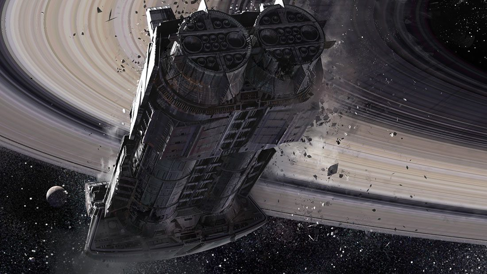
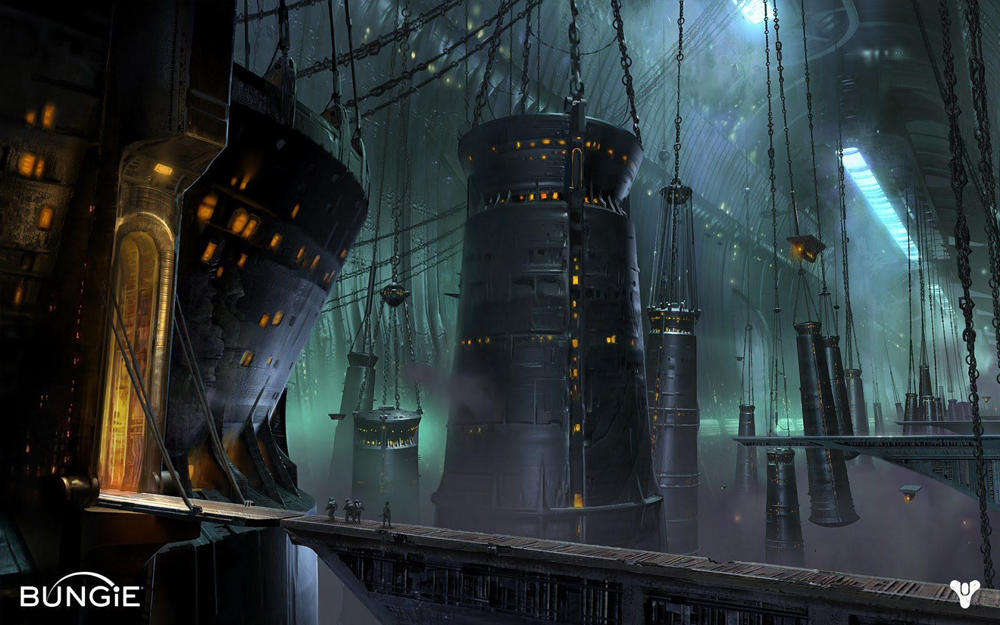

ALT ALL TRAFFIC. STAND BY FOR SNAP. MESSAGE TO FOLLOW.
PUBLIC KEY 110 341 AXA SOVEREIGN
FROM: PETRA VENJ
TO: ALL REEF ASSETS [ROC CLEARANCE]
SUBJECT: HIVE WARSHIP CONTACT
MESSAGE IS:
1. Massive Hive warship sighted in circum-Saturn space [contact via DSR TF 3.2]. Target designated DREADNAUGHT.
1a. Dreadnaught maneuvering unpredictably. Orbital parameters and stationkeeping behavior not compatible with standard dynamics.
1b. ESM analysis detects multiple Hive vessels in escort.
2. Target emitting sterile neutrinos, phaeton spectra, and mass growl. Major radiation events include gravity waves and axion scatter. Techeun conclusion: target possesses radical ontomorphic capabilities [see BANE DREAMER]
2a. Under no circumstances attempt teleonomic analysis of Dreadnaught emission spectra. ***This is a BRAINSTAIN ALERT.***
3. Dreadnaught radiation events correlate with eversive breach events across solar system. Dreadnaught is likely motive force behind breach events.
3b. Backscatter analysis and Techeun insight suggest Dreadnaught hosts complex internal environment. Small party boarding action may remain viable if noopathic hazards can be managed.
4. TF 3.2 shadowing Cabal fleet elements. Cabal attack on Dreadnaught likely but not imminent.
5. All Reef assets assume war posture. Stand by for fragment orders.
MESSAGE ENDS
STOP STOP STOP
